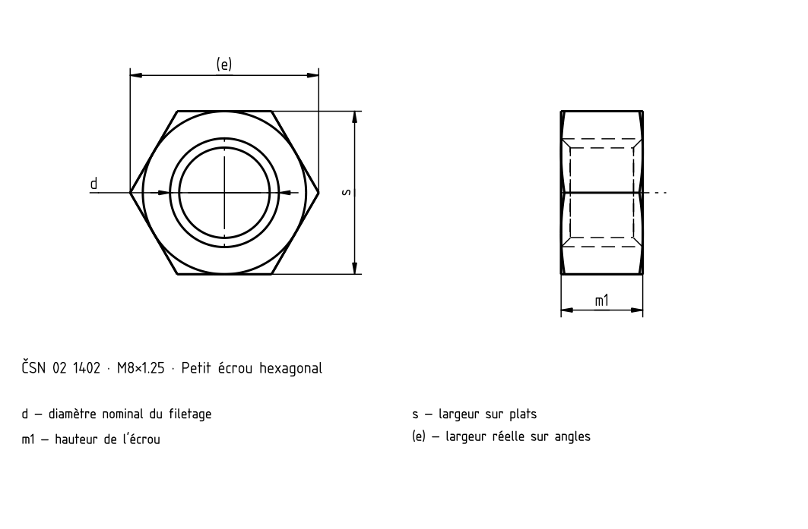
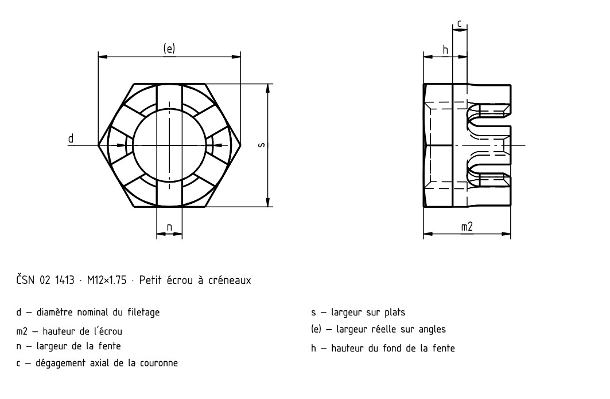

Petits écrous
Source historique; valeurs et exceptions non intégralement vérifiées selon la norme actuelle.


Petits écrous
| d | d | s | e | m 1 | m 2 | h | n | c | Goupille fendue |
|---|---|---|---|---|---|---|---|---|---|
| M6 | M6 | 9 | 10,4 | 4,5 | 7 | 3 | 2 | — | 1,6×15 |
| M8 | M8×1 | 12 | 13,8 | 6 | 8,5 | 4 | 2,5 | — | 2×18 |
| M10 | M10×1,25 | 14 | 16,2 | 7 | 9,5 | 5 | 2,8 | — | 2,5×20 |
| M12 | M12×1,25 | 17 | 19,6 | 8,5 | 12 | 6 | 3,5 | 2 | 3×22 |
| (M14) | (M14×1,5) | 19 | 21,9 | 10 | 14 | 8 | 3,5 | 2 | 3×25 |
| M16 | M16×1,5 | 22 | 25,4 | 11,5 | 16 | 9 | 4,5 | 2 | 4×30 |
| (M18) | (M18×1,5) | 24 | 27,7 | 13 | 18 | 10 | 4,5 | 2 | 4×35 |
| M20 | (M20×1,5) | 27 | 31,2 | 14 | 20 | 12 | 4,5 | 2 | 4×35 |
Petits écrous
| d | d | s | e | m 1 | m 2 | h |
|---|---|---|---|---|---|---|
| M6 | M6 | 9 | 10,4 | 4,5 | 7 | 3 |
| M8 | M8×1 | 12 | 13,8 | 6 | 8,5 | 4 |
| M10 | M10×1,25 | 14 | 16,2 | 7 | 9,5 | 5 |
| M12 | M12×1,25 | 17 | 19,6 | 8,5 | 12 | 6 |
| (M14) | (M14×1,5) | 19 | 21,9 | 10 | 14 | 8 |
| M16 | M16×1,5 | 22 | 25,4 | 11,5 | 16 | 9 |
| (M18) | (M18×1,5) | 24 | 27,7 | 13 | 18 | 10 |
| M20 | (M20×1,5) | 27 | 31,2 | 14 | 20 | 12 |
Petits écrous
| d | n | c | Goupille fendue |
|---|---|---|---|
| M6 | 2 | — | 1,6×15 |
| M8 | 2,5 | — | 2×18 |
| M10 | 2,8 | — | 2,5×20 |
| M12 | 3,5 | 2 | 3×22 |
| (M14) | 3,5 | 2 | 3×25 |
| M16 | 4,5 | 2 | 4×30 |
| (M18) | 4,5 | 2 | 4×35 |
| M20 | 4,5 | 2 | 4×35 |